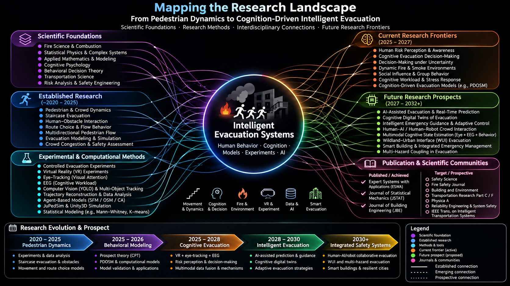

Pedestrian & crowd dynamics
Empirical analysis of pedestrian trajectories, route preferences, congestion, multidirectional flow, and movement behavior.
Postdoctoral Research Fellow · State Key Laboratory of Fire Science
University of Science and Technology of China (USTC)
Understanding how people perceive, decide, and move in complex emergencies — from empirical pedestrian dynamics to cognition-driven intelligent evacuation.
I am a postdoctoral researcher at the State Key Laboratory of Fire Science, USTC. I received my PhD in Safety Science and Engineering from USTC in 2025 under the supervision of Professor Weiguo Song. My research investigates pedestrian movement, human–obstacle interactions, route choice, and evacuation behavior in complex building environments.
My current research direction extends experimentally grounded evacuation modeling toward risk perception, cognitive decision-making, immersive virtual reality, and data-driven methods for safer emergency response.
Education: Hefei University of Technology (civil engineering); University of Science and Technology of China (PhD, 2025). Recognition: Outstanding International Graduate of USTC (2025).
Profile information based on the official SKLFS faculty profile.
Empirical analysis of pedestrian trajectories, route preferences, congestion, multidirectional flow, and movement behavior.
Human–obstacle interactions, stairway geometry, speed fluctuations, and safety implications for high-rise buildings.
Behavioral and agent-based approaches, including optimal-step and social-force modeling, for evaluating evacuation performance.
Investigating risk perception, uncertainty, attention, and behavioral adaptation during evolving emergencies.
Developing Unity-based evacuation experiments and exploring eye-tracking and multimodal measurements.
Video-based pedestrian tracking, trajectory reconstruction, simulation integration, and reproducible quantitative analysis.
A selection of published work, linked to journal or institutional records. Publication years follow the available bibliographic records.
For the complete institutional list, see Selected Publications of Rahim Rasa (SKLFS).
My work uses controlled evacuation experiments and quantitative analysis to understand how built environments and obstacles shape human movement. Current platform development explores immersive evacuation scenarios, agent-based simulation, and computer-vision-based pedestrian tracking.
Explore the research network linking fire science, behavioral theory, pedestrian dynamics, virtual reality, AI, and emerging safety applications.

Conceptual map of established expertise, current work, and proposed directions. Connections illustrate research relationships rather than measured bibliometric associations.
A proposed development pathway — not a claim of completed projects or guaranteed outcomes.
Experimental pedestrian dynamics, stairway evacuation, and behavior-informed modeling.
VR-based studies of risk perception, attention, decision-making, and multimodal measurement.
Calibration and validation of cognition-driven computational evacuation models.
Exploration of adaptive evacuation guidance, intelligent buildings, and cognitive digital twins.
State Key Laboratory of Fire Science
University of Science and Technology of China · Hefei, China
Email: abrasa@ustc.edu.cn
ORCID: 0009-0006-2373-6653
Institutional profile: USTC / SKLFS ↗